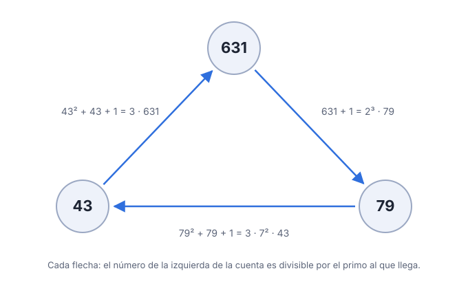
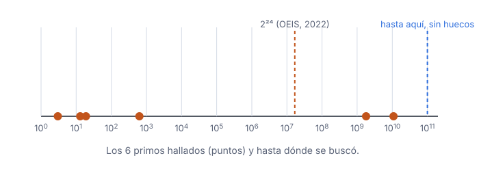

Explicado desde cero · OEIS A354427
Primos que vuelven
Se parte de un primo, se dan tres pasos que sólo usan sumar y dividir, y se mira si se llega de nuevo al punto de partida. Se revisaron todos los primos hasta 100.000.000.000. Vuelven exactamente 6.
1La pregunta, con números
Tomá el primo 631 y hacé tres cosas.
631 + 1 = 632 = 2 · 2 · 2 · 79 → me quedo con el primo 79 79·79 + 79 + 1 = 6321 = 3 · 7 · 7 · 43 → me quedo con el primo 43 43·43 + 43 + 1 = 1893 = 3 · 631 → y aparece 631 otra vez.Fuimos 631 → 79 → 43 → 631 y volvimos al principio. Ahora probá con el primo 7: 7 + 1 = 8 = 2·2·2, así que hay que quedarse con 2; después 2·2 + 2 + 1 = 7, me quedo con 7; y 7·7 + 7 + 1 = 57 = 3 · 19. En 57 no hay ningún 7. El primo 7 no vuelve.
La pregunta es sólo ésta: ¿qué primos vuelven? Tomohiro Yamada la hizo en 2022, encontró 3, 13, 19 y 631, comprobó que no hay otros por debajo de 16.777.216 y anotó dos mucho más grandes. Lo que nadie sabía es si había otros escondidos entre medio.
2Cinco palabras
- primo
- un número entero mayor que 1 que sólo lo dividen el 1 y él mismo: 2, 3, 5, 7, 11, 13, …, 631.
- divide
- «79 divide a 632» quiere decir que 632 ÷ 79 no deja resto: 632 = 8 · 79.
- paso
- desde un primo p se puede ir a cualquier primo que divida a p + 1 (primer paso) o a x·x + x + 1 (segundo y tercer paso).
- testigo
- los dos primos por los que se pasa en la vuelta. Para 631 el testigo es (79, 43). Cualquiera lo comprueba con una calculadora.
- resto
- lo que sobra al dividir: 1893 entre 631 deja resto 0, y 57 entre 7 deja resto 1.
3La receta
Para un primo p: (1) escribí p + 1 como producto de primos y elegí uno, q. (2) Calculá q·q + q + 1, escribilo como producto de primos y elegí uno, r. (3) Calculá r·r + r + 1 y fijate si p lo divide. Si alguna elección de q y r funciona, p está en la lista.

4Probalo vos
¿Vuelve el primo 19? Sólo hace falta sumar, multiplicar y dividir por números chicos.
Ver la respuesta
19 + 1 = 20 = 2 · 2 · 5. Elegí q = 2: 2·2 + 2 + 1 = 7, así que r = 7. Después 7·7 + 7 + 1 = 57 = 3 · 19. Sí: 19 → 2 → 7 → 19, y 19 está en la lista.
5De dónde sale la información
De un programa que aplica la receta a todos los primos hasta 100.000.000.000 —unos cuatro mil millones de primos— y a nada más. Nadie eligió qué primos mirar y nadie opinó: el programa encuentra un testigo o no lo encuentra.
La parte difícil es el paso (2): q·q + q + 1 puede tener veinte cifras, y descomponer números así miles de millones de veces es lento. El programa lo evita con un atajo que está demostrado en el repositorio. Si el primo r que buscamos es más grande que p, el otro factor de q·q + q + 1 es más chico que p, y las reglas de los restos dicen exactamente cuál tiene que ser. Entonces, en vez de descomponer un número grande, alcanza con probar una división.

6Qué se encontró
Hasta 100.000.000.000 vuelven exactamente 6 primos: 3, 13, 19, 631, 1.794.067.711 y 10.855.016.833.
Que los dos últimos vuelven ya se sabía. Lo nuevo es que no hay nada entre medio: entre 631 y 1.794.067.711, entre ése y 10.855.016.833, y desde ahí hasta cien mil millones, ningún otro primo hace la vuelta. Eso es lo que permite anotar 1.794.067.711 y 10.855.016.833 como los miembros quinto y sexto de la lista, y lleva la búsqueda de 16.777.216 a cien mil millones.

7Cómo se sabe que no está mal
Encuentra lo que ya se sabía. Corrido desde cero, el programa devuelve exactamente el 3, 13, 19 y 631 de Yamada, y nada más por debajo de 16.777.216, que es la cota que él publicó. También encuentra sus dos primos grandes, con los mismos testigos que él dio. Una comprobación que reproduce respuestas conocidas se llama control positivo: si el programa se perdiera algo que tiene que encontrar, lo sabríamos.
Tres programas distintos coinciden. Uno sigue la receta al pie de la letra, descomponiendo cada número en primos. Otro descompone q·q + q + 1 por un método completamente distinto y recorre el camino al revés. El tercero usa el atajo. No comparten nada salvo la pregunta, y dan las mismas vueltas, una por una, donde se superponen.
Cada respuesta se vuelve a comprobar con aritmética exacta. El programa rápido sólo propone; cada testigo se verifica después con números enteros, cosa que cualquiera puede repetir.
8Para qué sirve
Estos primos vienen de un problema de Jean-Marie De Koninck: ¿para qué números n la suma de los divisores de n es igual al cuadrado del producto de sus primos distintos? Sólo se conocen 1 y 1782. Yamada demostró que cierto tipo de solución necesitaría un primo de esta lista, o de otra parecida con cuatro pasos. Así que conocer la lista exacta hasta una cota le dice a quien busque soluciones dónde no pueden estar. No resuelve el problema.
9Lo que no dice
No dice si la lista sigue para siempre o se termina. No dice nada por encima de cien mil millones. No resuelve el problema de De Koninck ni toca la lista de cuatro pasos (OEIS A355298), que pide factorizar números mucho más difíciles. Y no descubre los primos quinto y sexto —eso lo hizo Yamada—: muestra que antes de ellos no hay otros.
Glosario
| palabra | qué quiere decir | ejemplo |
|---|---|---|
| primo | sólo lo dividen el 1 y él mismo | 631 |
| divide | no deja resto | 631 divide a 1893 |
| testigo | los primos por los que se pasa en la vuelta | (79, 43) para 631 |
| control positivo | una prueba que tiene que encontrar algo ya conocido | encontrar 3, 13, 19, 631 |
| resto | lo que sobra al dividir | 57 ÷ 7 deja 1 |
Para seguir leyendo
Nivel 1 — sin fórmulas
OEIS A354427, la ficha de esta lista, con los comentarios de Yamada. Función divisor en Wikipedia, para la suma de divisores.
Nivel 2 — un libro de texto
G. H. Hardy y E. M. Wright, An Introduction to the Theory of Numbers, capítulo XVI (las funciones aritméticas, entre ellas la suma de divisores). K. Ireland y M. Rosen, A Classical Introduction to Modern Number Theory, capítulo 9, para las raíces cúbicas de la unidad módulo un primo que usa el atajo.
Nivel 3 — los trabajos con los que éste se compara
T. Yamada, On a problem of De Koninck, Moscow J. Combinatorics and Number Theory 10 (2021) 249–260, doi:10.2140/moscow.2021.10.249 —de donde salen estos primos—. K. A. Broughan, J.-M. De Koninck, I. Kátai y F. Luca, On integers for which the sum of divisors is the square of the squarefree core, J. Integer Sequences 15 (2012), 12.7.5. El programa de L. A. Brown para la hermana A354426, que él llevó hasta 108.